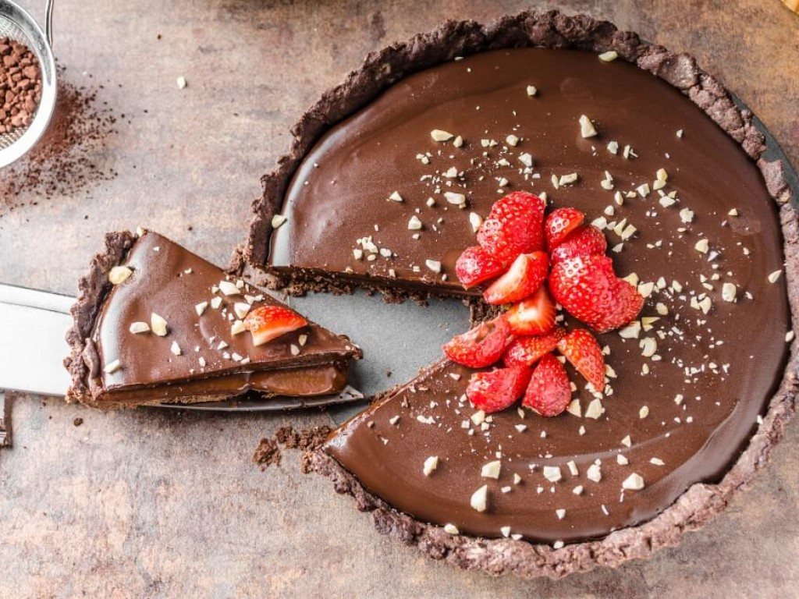

|
|  | |
Todas as receitas de sobremesasOs doces e as sobremesas são as grandes tentações da culinária, seja em uma festa, lanche ou no fim de uma refeição. Veja as receitas de doces e sobremesas simples, fáceis e rápidas, usando chocolate e leite condensado, e saiba como fazer guloseimas como brigadeiro, bombom e docinhos. |

|

|